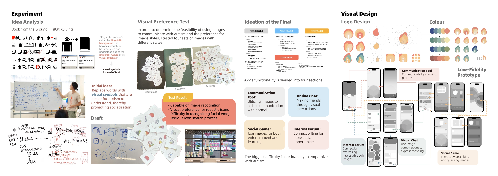

Over four years, I immersed myself in the autism community. Starting from special schools, disability care facilities, and autism rehabilitation centers, I sought to understand the challenges with autism, and summarized key design points.
Ultimately, I focused on two issues: the inability to meet the social needs of individuals with autism and the barriers to language communication. I designed an app to facilitate better social interaction for autism.
2019-2022 | UX Design